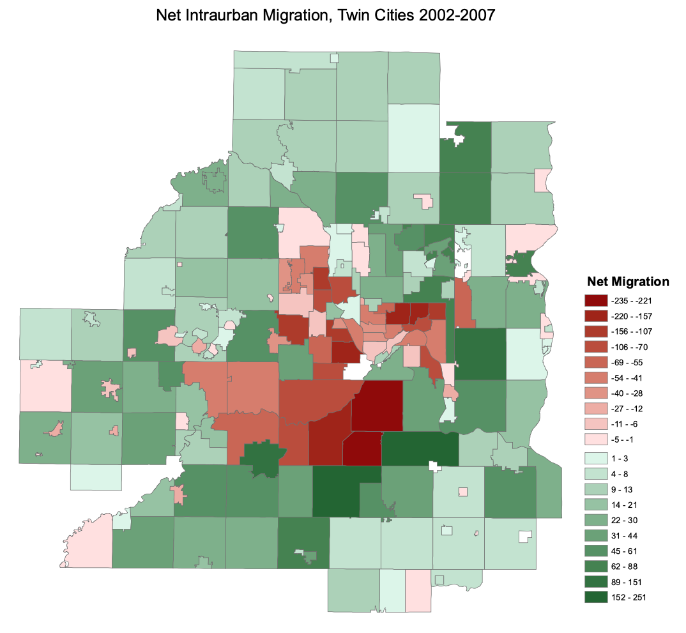
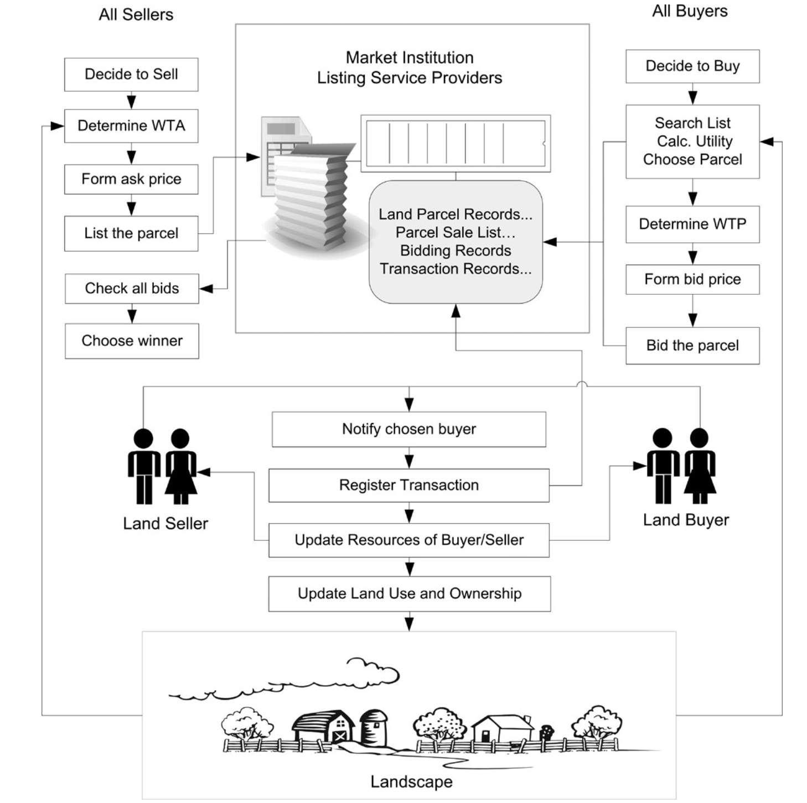

Cartogram Algorithms
cartogram
cartography
Fast computer algorithms for automatic generation of contiguous cartograms with complete topological integrity
Sep 1, 2019
Selected research works in algorithm development, spatial analysis and modeling, and web-based geovisualization. Informal records of tech exploration and solutions are shared in the Blog.
| Date | Title | Description | |
|---|---|---|---|
|  | Sep 1, 2010 | Introurban Migration | Big spatial analytics of intraurban migration using tax parcel data |
|  | Sep 1, 2023 | LUXE ABM | A stylized ABM for economic-theory-informed land use change |